Section 7.5 Sidetrip: Interactivity in SageMath
We have programmed modules to be interactive in nature by having them prompt a user for input (credit card interest example). Other ways of employing interactivity is through the use of things like sliders, checkboxes, and radio buttons. We will build a working example slowly that will lead to more complex ones, and your next homework assignment.
Let's build a graph plotter that has some options. We'll start by getting the commands for what we want the output to look like. Here we just want a simple plot.
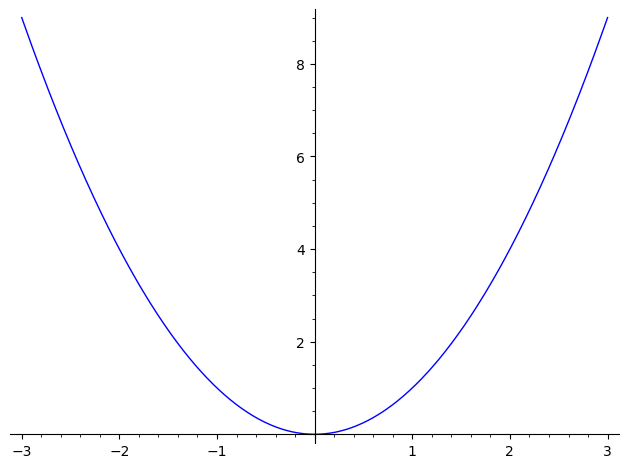
Now we abstract out the parts we want to change. We’ll be letting the user change the function, so let’s make that a variable \(f\text{.}\)
This was important because it allowed us to step back and think about what we would really be doing.
Now for the technical part. We make this a def function.
If we call it with a different value for \(f\text{,}\) we should get a different plot.
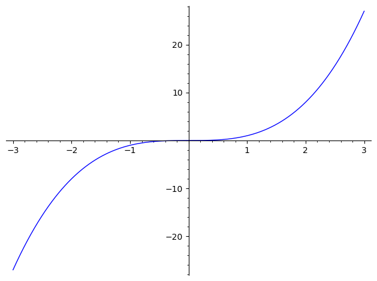
So far, we’ve only defined a new function, so this was review. To make a “control” to allow the user to interactively enter the function, we just preface the function with @interact.
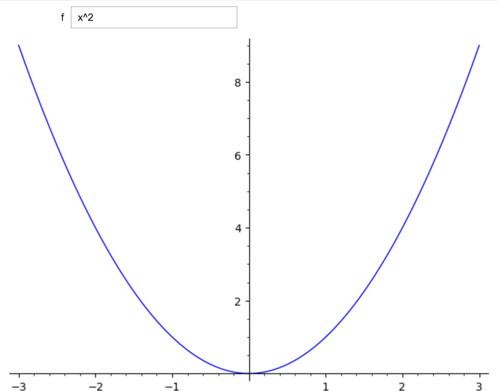
Note that we can still call our function, even when we’ve used @interact. This is often useful in debugging it.
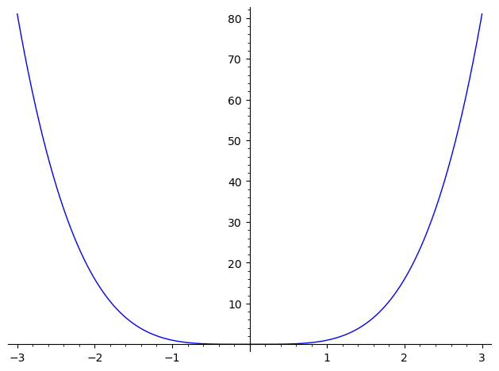
Subsection 7.5.1 Adding complexity
We can go ahead and replace other parts of the expression with variables. Note that _ is the function name now. That is a just convention for throw-away names that we don’t care about.
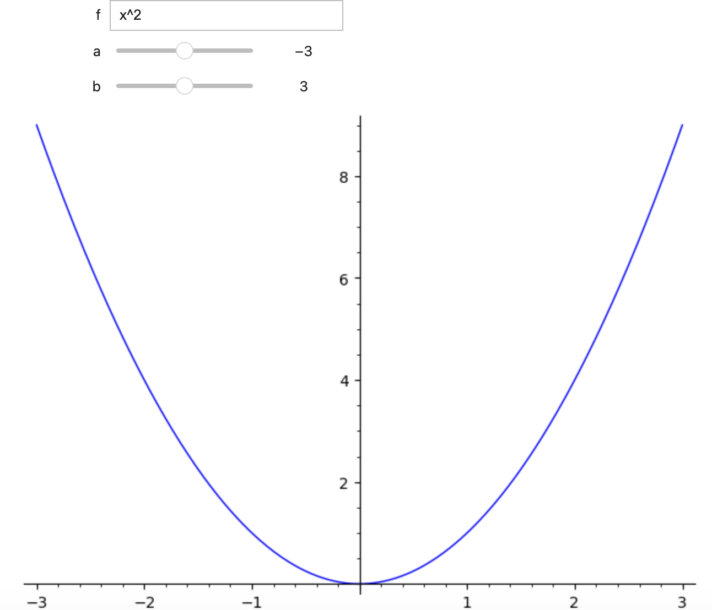
If we pass ('label', default_value) in for a control, then the control gets the label when printed. Here, we’ve put in some text for all three of them. Remember that the text must be in quotes! Otherwise Sage will think that you are referring (for example) to some variable called “lower”, which it will think you forgot to define.
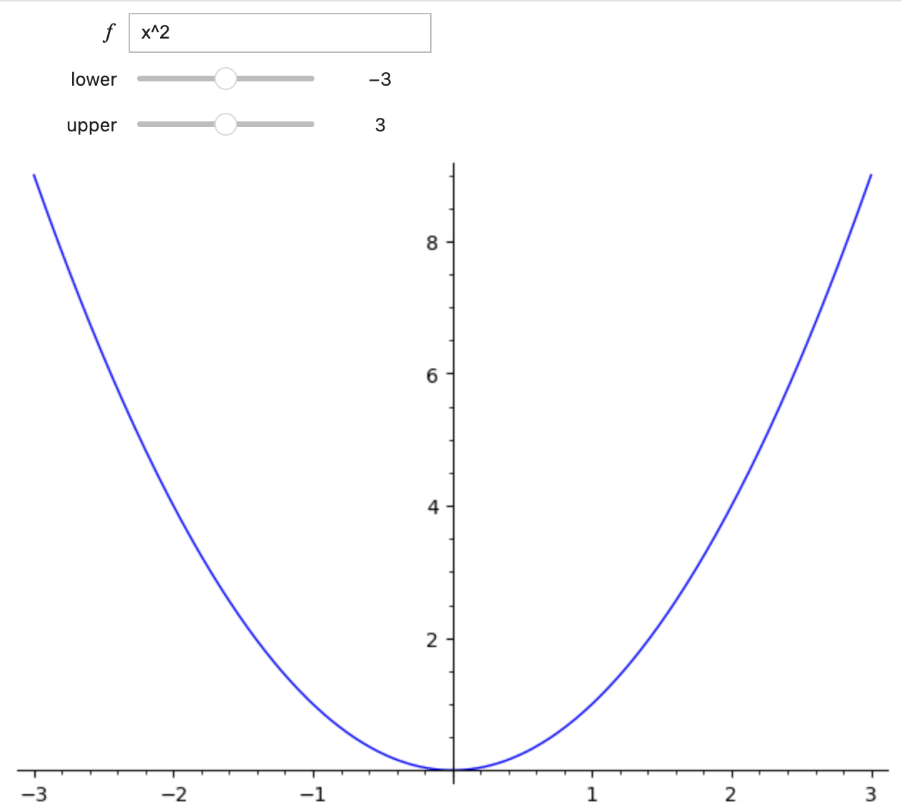
On the label above for the function \(f\text{,}\) note that we use the r indicator for raw string because of the backslashes in the LaTeX code.
We can specify the type of control explicitly, along with options. (We will look more closely at the various types of controls in a moment.)
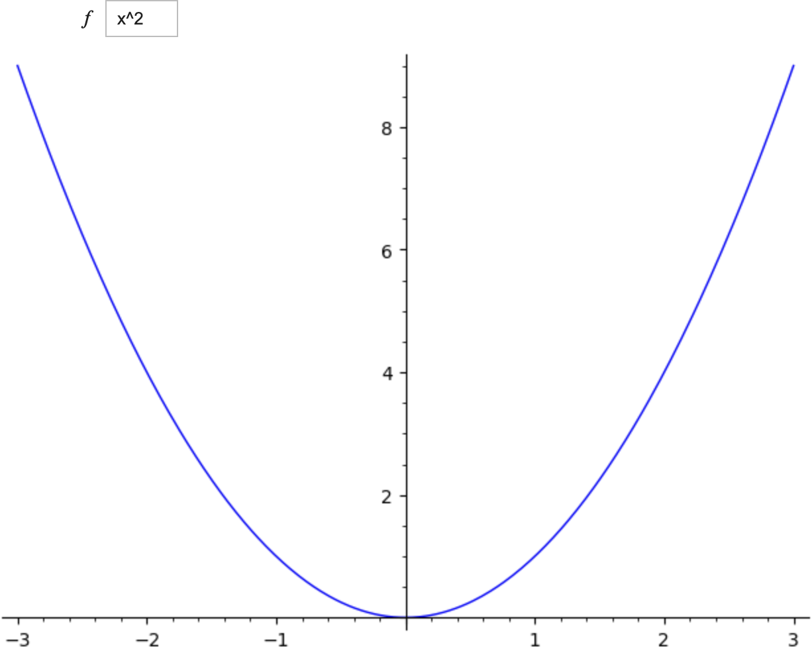
For this version, we demonstrate a bunch of options. Notice the new controls:
range_slider, which passes in two values,zoom[0]andzoom[1].True/Falsegets converted to checkboxes for the end user.
Subsection 7.5.2 The process for building interacts
Interactive modules (or interacts) are the types of things that are generally put together to install on a webpage. (For instance, I have various interacts installed on my Differential Equations Brightspace page.) We will walk together through the process of building an interact that, for instance, Calculus I students might find useful: drawing a moving tangent line to a simple second-degree polynomial. Here are the stages:
Concept development -- take time to actually nail down precisely what you want the interact to do. Think of this as not only a layout, but a behavior model. (If I click here, this happens; if I click there, this other thing happens, et cetera. . . )
Design a subroutine in SageMath (using
def) that represents one round, cycle, or phase of the interact.Polish this subroutine until it is just right, with all the input and output just as you want it to be, including colors and so forth.
Convert this subroutine into an interact subroutine within SageMath or CoCalc, using the
@interactandslidercommands.
If we were building this for, say, an internal webpage for a company, we would then use some HTML code to install our interact on the webpage so that anyone with access to the page could use it. For now, we will rest with getting an interactive to work in SageMath/CoCalc.
Example 7.5.1. Tangent line interact.
Concept development.
Before actually coding anything, we should try to define precisely what we want the interact to do.
Generally, the best example for illustrating a mathematical idea should be neither too complex nor too simple. In this case, we want to draw a tangent line and show an early calculus student (perhaps two or three weeks into the course) what a tangent line looks like. It will be useful to choose the drawn function to be something simple -- like a polynomial. We will choose the function \(f(x) = x^3 -x\text{.}\)
Next, we will focus on what the user will be allowed to change, and what the user will not be allowed to change. These will become the controls for the interact. The user should be able to change the \(x\)-coordinate of the point where the tangent line is drawn, but not the \(y\)-coordinate, which should be computed by the interact. In this way, the user will never choose a point that is not on the curve \(y = x^3 - x\text{.}\)
It may be useful to make a sketch of what the output will look like. How can we optimally display the circumstances to show sufficient detail -- but not so much detail as to confuse someone?
Design the subroutine.
Here is the code for the subroutine.
We first declare the function \(f(x) = x^3 - x\) and then declare a second function for the derivative. One point to note: we all know that \(f'(x) = 3x^2-1\text{,}\) so why didn't we just hard-code that function instead of having SageMath compute it as we did? Because we may wish to use another function later on, and an easy mistake to make is to change \(f\) but forget to change \(f'\text{.}\)
We next use the def command to define our subroutine and name it tangent_at_point. This subroutine will be the nucleus of our working interact. (We will slowly evolve it.)
A tangent line can be produced when we have three ingredients: the slope, the \(x\)-coordinate, and the \(y\)-coordinate. The \(x\)-coordinate will eventually come from a slider when we're through, but right now it's a real number input (called \(x_0\)) to the subroutine we are creating with the def command. Most interacts have multiple sliders because they need more parameters.
We then have SageMath compute the \(y\)-coordinate and the slope from \(f(x_0)\) and \(f'(x_0)\text{,}\) respectivly. Usually a student would use the point-slope formula \(y-y_0 = m(x-x_0)\) to get the equation of the tangent line and then use algebra to change it into the slope-intercept form \(y=mx+b\text{.}\) However, when coding, we should have an explicit formula for \(b\text{.}\) The four lines of comments in the code show the derivation of our formula for \(b\text{.}\)
Three plot commands follow. The first plots \(f(x)\) on the interval \((-2,2)\) in blue; the second plots the tangent line in tan; the third puts a big red dot at their intersection and is useful to draw the user's attention. We then show the plots all superimposed together.
Polish the subroutine.
We are at the point where we should run the subroutine and tinker with it if needed: adjust the framing of the graphs, change colors, etc.
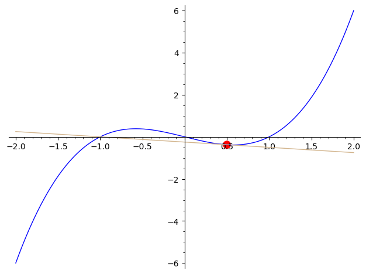
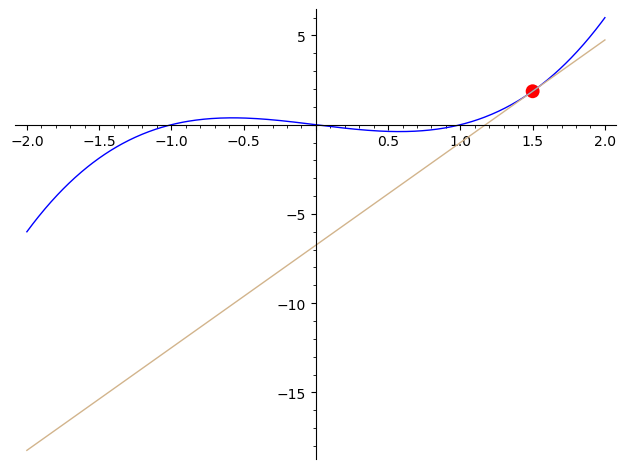
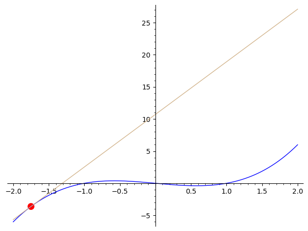
These aren't bad but there's room for improvement. For example, in the last plot, the tangent line is relatively steep (with a slope of 8.1875), thus the tangent line actually goes up to \(y = 25\) before exiting the plot. This makes the cubic curve appear tiny, because the curve goes up only to \(y = 6\text{.}\) Therefore, we will bound the \(y\)-coordinates of the plots. We do this for both \(f(x)\) and the tangent line, restricting them to \(-6 < y < 6\text{,}\) because that is the range of \(f(x) = x^3 - x\) over the domain \(-2 < x < 2\text{.}\)
If you look at the new and improved code below, you will see ymin and ymax options inside the first two plot commands.
There are other changes to the code. The red dot seemed large, so we lowered its area from 100 to 50. We also thought a gridline background would be helpful so we added the option gridlines = 'minor' in the command for p1. Since p1 is the “bottom” of the superimposed plots, it will show up when we actually do superimpose the three plots.
Sometimes, showing information about what the user is seeing is useful, so we have the print statements at the end. We can now re-execute our test cases and show that they look much better.
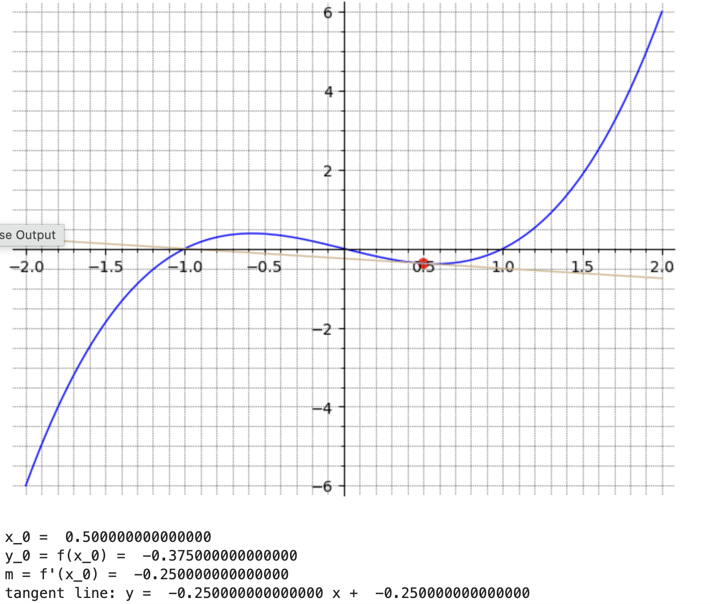
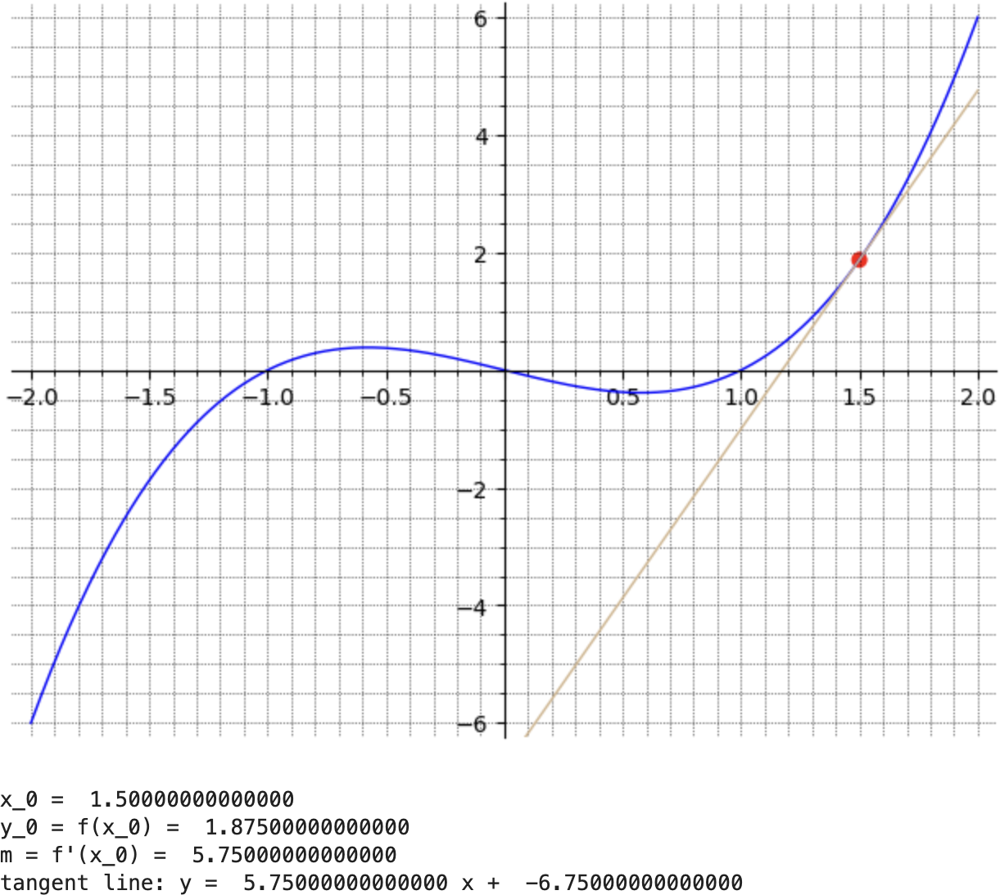
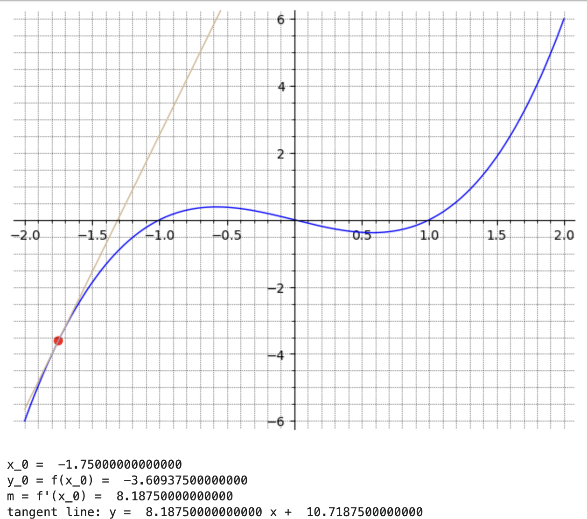
Convert to an interactive subroutine.
Now we'll invoke the @interact command and see how to make sliders for the parameters in our subroutine. Three changes will be made in the code now, two of which are minor, but one of which takes a bit of explaining.
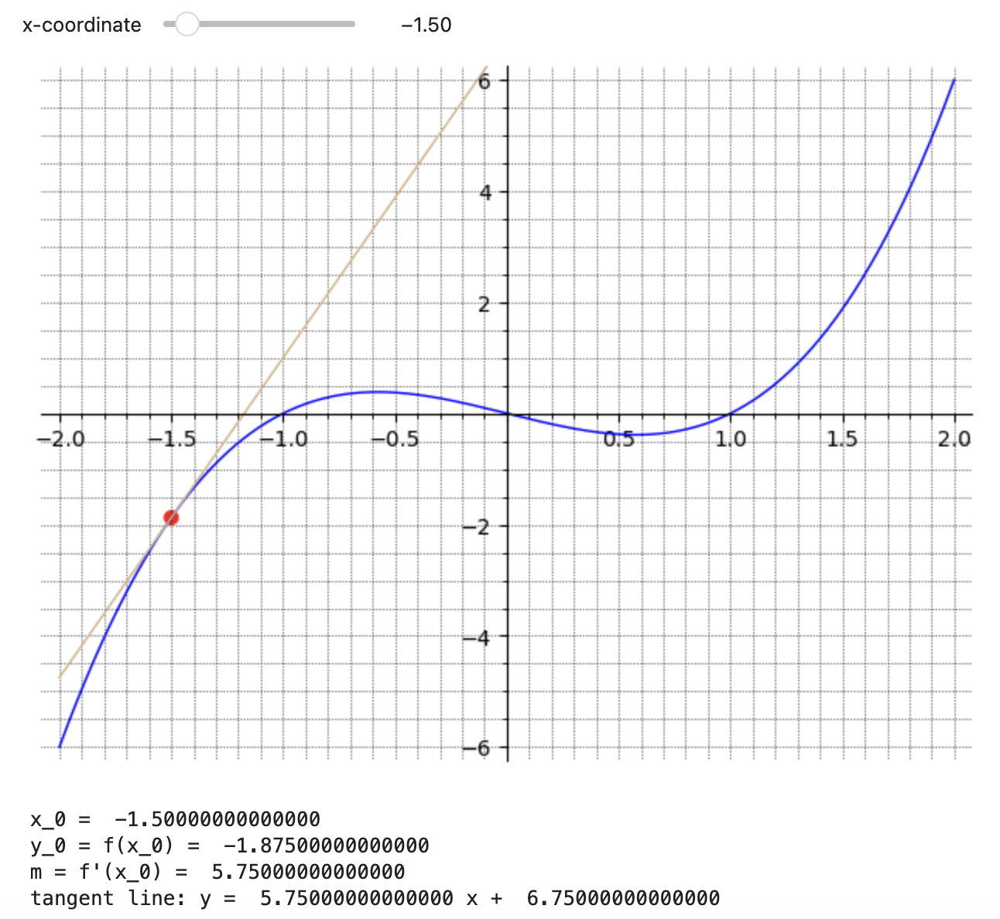
First, note that we've added the @interact command on the line right above the def command. This signals SageMath that what follows is an interact.
Second, and this requires a bit of explaining, we have used the slider command to change \(x_0\) from a numerical input into a slider that the user can manipulate. The first two parameters tell SageMath that the \(x_0\) variable will be restricted to the interval \(-2 \le x \le 2\text{.}\) The third parameter tells SageMath the granularity of the slider. In this case, we want each move to represent 1/10. Thus if the slider is at \(x_0 = 0.5\text{,}\) the two positions to either side would be 0.4 and 0.6. The fourth parameter represents the initial condition. In this case, the slider will start out with \(x_0\) set to \(-1.5\text{,}\) but the user can move it around to other values. Finally, the fifth parameter (which is optional) will give a human-readable label to the slider.
This means that if we have to call this subroutine now, we would call it without an argument and just type tangent_at_point() because we are no longer passing \(x_0\) to the subroutine.
We can increase the interactivity of this app. We can have the user type in their own function \(f\text{,}\) and we can also use sliders to have the user control the domain of the graph (\(x_1\) to \(x_2\)) as well as the range (\(y_1\) to \(y_2\)). Note that weird things can happen if either \(x_1\ge x_2\) or \(y_1\ge y_2\text{.}\) (There is a way to make sure this doesn't happen but it's more complicated -- for now, we'll just assume users know to always have \(x_1\lt x_2\) and \(y_1 \lt y_2\text{.}\))
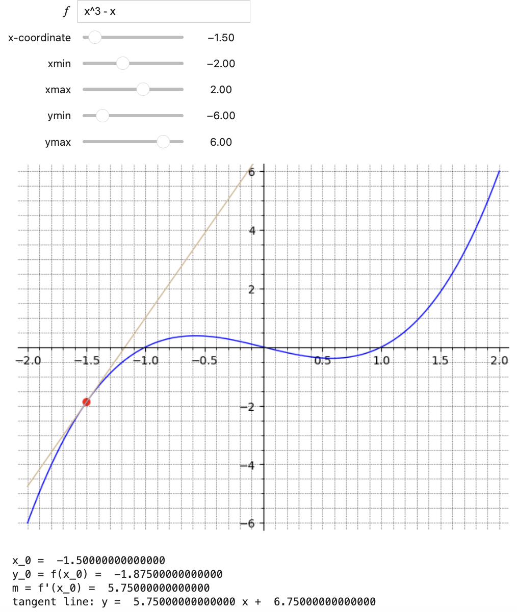
Checkpoint 7.5.2.
Suppose you are going to teach about sine waves as they occur in light, electricity, sound and so forth. For example, maybe you wish to explain to the student the role of amplitude and angular velocity (radians per second). In summary, imagine that you want to make an interact which will graph
where \(A\) and \(\omega\) are controlled by sliders.
For the plot, I recommend using \(-10 \lt x \lt 10\) and \(-5 \lt y \lt 5\text{.}\) For the amplitude, while one could see advantages to forcing the amplitude to be positive, I think it might be nice for students to learn the effect of \(A \le 0\text{,}\) so I recommend \(-5 \le A \le 5\) volts. For \(\omega\text{,}\) it might be confusing to explain what \(\omega = 0\) represents, so perhaps \(0.5 \le \omega \le 5\) is a good choice. Try \(A\) in a granularity of each step being \(1/4\)th of a volt and \(\omega\) in a granularity of \(1/2\) radians per second.